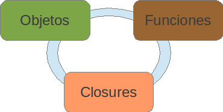

JavaScript
Características del lenguaje.
Es un lenguaje multi paradigma:
- Orientado a objetos. Usando prototype (prototype-based). Influencia de lenguaje Self.
- Funcional. Influencia de lenguajes como Scheme.
- Las funciones son objetos de primer orden. Pueden aparecer en cualquier lugar.
- El lenguaje no incluye estructuras inmutables.
- La recursión no es el mecanismo central para iterar.
- Imperativo. Se expresa paso a paso lo que queremos que el programa logre.
Otras características:
- Tipos dinámicos. El tipo de dato es determinado por el valor asignado.
- Arreglos y objetos literales.
[1,2,3,4] {prop1: 'val1', prop2: 'val2'}
Aprendizaje del lenguaje.
Puesto de la manera más simple, debemos aprender 3 conceptos y cómo estos se relacionan.
Son objetos, no clases
Se debe hacer énfasis en que al declarar objetos literales en Javascript, no se crea un nuevo tipo de dato (clase) que podamos instanciar una y otra vez como sucede en lenguajes como Java.
var objeto_vacio = {};
// Para agregar propiedades a un objeto literal, las siguientes
// dos notaciones son válidas en JavaScript.
var persona = {
"nombre" : "Juan",
"ap-parterno" : "Perez",
"ap-materno" : "Garcia"
};
var persona = {
nombre : "Juan",
ap_parterno : "Perez",
ap_materno : "Garcia"
};
Propiedades de objetos.
Las propiedades pueden ser a su vez otros objetos o incluso funciones.
var vuelo = {
aerolinea: "Mexicana",
numero: 815,
salida: {
ciudad: "MEX",
hora: "2004-09-22 14:55"
},
llegada: {
ciudad: "LAX",
hora: "2004-09-23 10:42"
}
};
// Podemos acceder/modificar a las propiedades de varios modos:
vuelo.aerolinea = "American airlines";
vuelo.llegada["ciudad"] = "NY";
// Del mismo modo podemos añadir propiedades dinámicamente:
vuelo.avion = {
modelo: "Boeing 666",
capacidad: 666
};
Inspeccionando tipos de datos y propiedades de objetos.
Con el operador typeof podemos inspeccionar los tipos de datos en Javascript.
typeof vuelo.numero // 'number'
typeof vuelo.aerolinea // 'string'
typeof vuelo.salida // 'object'
typeof vuelo.piloto // 'undefined'
Usando hasOwnProperty podemos saber si un objeto define una propiedad (aunque esta sea null, undefined, false o 0).
vuelo.hasOwnProperty("aerolinea"); // true
vuelo.hasOwnProperty("piloto"); // false
Iterando propiedades de un objeto.
La notación para acceder a los elementos de un arreglo también puede ser usada con los objetos en JavaScript.
for(var prop in vuelo){
log(vuelo[prop]);
}
No obstante se debe tener cuidado en navegadores como IE 6,7 y 8 pues propiedades nombradas como:
- isPrototypeOf
- hasOwnProperties
- toLocaleString
- toString
- valueOf
Funciones
Declaración de funciones.
Al declarar una función usamos:
- La palabra reservada function.
- El nombre de la función (opcional).
- Una lista de parámetros y el cuerpo de la función.
Ejemplo:
function nombreFuncion(explicito1, explicito2) {
// Cada función al ser llamada recibe además dos
// objetos implícitos: this y arguments
}
// Podemos declarar funciones anónimas y asignarlas a variables
// o propiedades de objetos.
var fun1 = function(){...};
window.fun = function(){...};
// Podemos declarar funciones dentro de arreglos como cualquier otro objeto...
var funs = [nombreFuncion, fun1, function(){...}];
//... como parámetros de otras funciones o valores de retorno.
function unaMas(fun){
fun();
return function(){...};
}
var funDevuelta = unaMas(function(){...});
Las funciones en javascript son tratadas como elementos de primer nivel (first-class objects).
Alcance y declaración de funciones.
En javascript sólo las funciones crean bloques declarativos (scopes).
function inner(inicial){
// El cuerpo de está función representa un nuevo scope.
if(inicial == undefined) {
// x es visible en toda la función inner.
var x = 0;
}
return function(num) {
// Javascript busca la variable x partiendo del scope más interno.
x += num;
}
}
El objeto arguments y parámetros de función.
- Javascript no es estricto en cuanto al número de argumentos pasados a una función. Podemos pasar más o menos de los explícitamente declarados.
- Todos los argumentos pasados al llamar una función están contenidos dentro de el objeto implícito arguments que Javascript provee.
function sum(num1, num2) {
// Los parámetros explícitos también están en arguments...
log(num1 + " es igual a " + arguments[0]);
// ...al igual que los demás argumentos.
log("Parámetro no explícito: " + arguments[2]);
}
Aunque arguments se comporta como un arreglo, no es propiamente un objeto Array.
// Los métodos de un objeto de tipo Array no los encontramos en arguments.
arguments.shift(); // aqui shift no está definido.
// Pero hay alternativas a esto.
Array.prototype.shift.call(arguments); // Favor de no entrar en pánico.
El parámetro implícito this.
Este otro parámetro debe ser entendido como el contexto de la función. Es decir, el objeto desde el cual la función fue invocada.
O desde una perspectiva funcional: Al invocar una función, estamos aplicándola a un contexto.
<script>
function calcularImpuesto() {
if(this == window)
log(El contexto es el objeto window del navegador.);
}
calcularImpuesto();
</script>
Invocando funciones en JavaScript.
Dependiendo de cómo invoquemos una función el contexto (this) de la misma varía:
- Si es invocada desde un objeto usando punto ".", el objeto a la izquierda del mismo es el this.
- Si usamos la palabra reservada new, entonces this será un objeto vacío. o_O
- Podemos decidir arbitrariamente a qué contexto aplicaremos una función usando apply y call.
// Desde un objeto. A la manera de lenguajes orientados a objetos.
calculadora.calcularImpuesto();
// Usando new invocamos a la función Calculadora como un constructor.
var calculadora = new Calculadora();
// Usando call o apply
calculadora.calcularImpuesto.call(otraCalculadora);
Uso de apply y call.
Las funciones apply y call están presentes en todos los objetos de tipo Function.
Como se mencionó, podemos usarlas para decidir arbitrariamente cuál será el contexto de la función.
Cabe la pregunta: ¿Para qué sería útil esto?.
// Por ejempĺo podríamos crear una función para iterar más fácilmente:
function forEach(arreglo, fun){
for(var i = 0; i < arreglo.length; i++){
fun.call(arreglo[i]);
}
}
var clientes = [{nombre: Andrés Eduardo, edad: 31}, {nombre: La Chayo, edad: undefined}];
forEach(clientes, function(){
var li = document.createElement("li");
li.appendChild(document.createTextNode(this.nombre));
ul.appendChild(li);
});
Funciones de orden superior en JavaScript.
En programación funcional, las funciones de orden superior se caracterizan por:
- Aceptar una o más funciones como entrada.
- Devolver otra función como salida.
A pesar de que JavaScript no es un leguaje funcional puro podemos codificar en términos de funciones de orden superior.
var incr = 3;
var mod = map([1,2,3], function(){
return this + incr;
});
Funciones como objetos.
Como cualquier objeto en JavaScript, las funciones pueden tener métodos y propiedades. Ya hemos visto algunos: call, apply y name.
Además podemos añadir nuevas propiedades y métodos a nuestras funciones.
function proceso(clave){
//.. un importante proceso de negocio.
if(!proceso[clave]) proceso[clave] = {};
if(proceso[clave] != null){
// Evitamos recalcular el proceso pues ya está en cache.
return proceso[clave];
}
}
proceso.ejecutar = function(clave){
// Tareas a realizar antes del proceso...
return this(clave);
};
proceso.ejecutar(clave);
Closures
¿Qué es un closure?
Un closure es el alcance (scope) creado por una función al ser declarada. Esto permite manipular variables que son externas a la función misma.
var elem = jQuery("div");
elem.html("Cargando...");
jQuery.ajax({
url: "test.html",
success: function(contenidoHtml){
assert(elem, "Por medio del closure creado por este callback, elem es visible.");
elem.html(contenidoHtml);
}
});
/
#